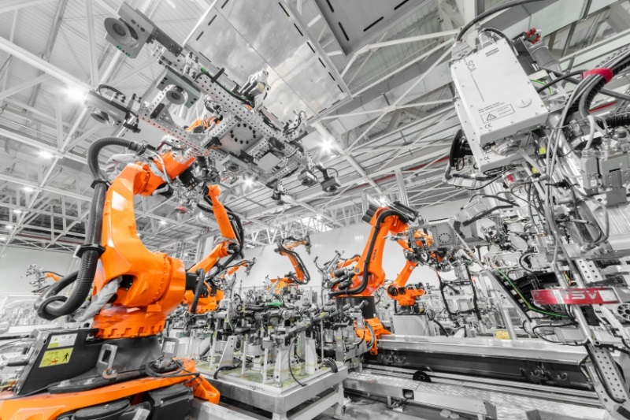
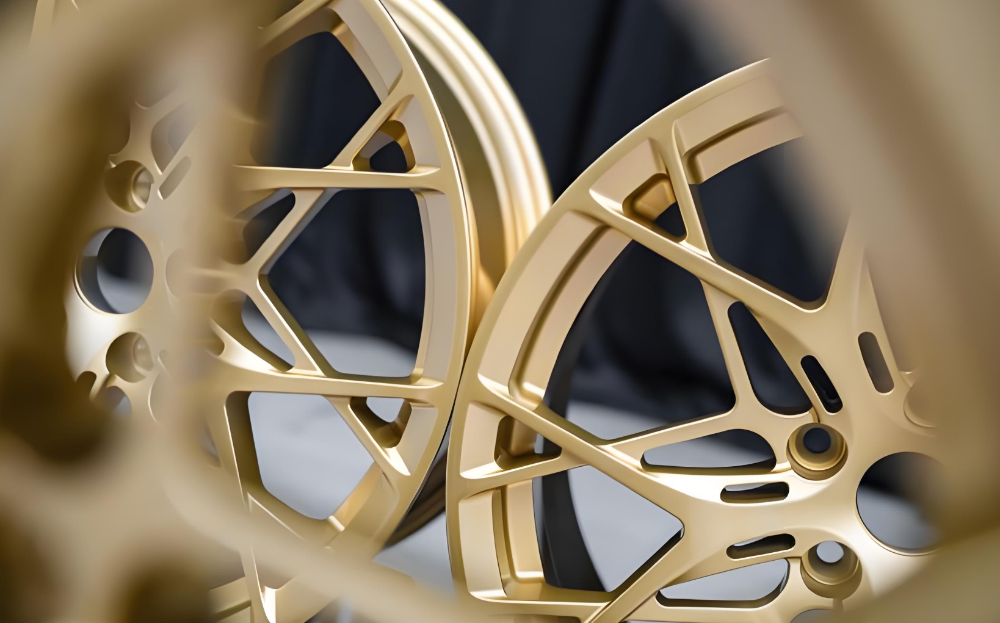

Where Does China Manufacturing Go From Here?
The era of competing on price alone is ending. For young Chinese entrepreneurs and factory owners in the automotive aftermarket, the path forward isn't about being cheaper — it's about being better.
Different Industries, Different Paths
There's no single answer to where "China manufacturing" should go. Different industries face different realities, different market pressures, and different opportunities.
But in the automotive aftermarket and modification parts industry — the space we know best — the direction is clear: quality is the only sustainable foundation.
Everything else — service, support, profitability, long-term relationships — can only be built on top of consistent product quality. Without that foundation, nothing else matters.
The "Cheap" Trap: A Race to the Bottom
For decades, "Made in China" has been associated with one thing: low price.
And yes, for certain products and certain buyers, price is the deciding factor. But here's the problem with competing on price alone: you can always find someone cheaper.
There will always be a factory willing to cut another corner, use slightly worse materials, skip a quality check, or reduce packaging to save $0.10 per unit. If your only competitive advantage is being the cheapest option, you're in a race with no finish line — only a cliff at the end.
This isn't a path forward. It's a vicious downward spiral where everyone loses:
- Factories lose profitability and can't invest in better processes or materials
- Quality becomes inconsistent or poor
- Customers face failures, returns, and reputation damage
- The "Made in China" label becomes synonymous with "disposable" and "unreliable"
We've seen this cycle repeat in product after product, category after category. And it benefits no one in the long term — not the factory, not the buyer, and certainly not the end customer.
The New Generation's Mission: Quality First
Here's what gives us hope: the next generation of Chinese entrepreneurs and factory owners thinks differently.
Many young business owners and manufacturers — including us at Lerex — don't want to compete on being the cheapest. We want to compete on being the best at what we do.
We've seen what happens when you prioritize quality:
- Customers come back
- Relationships deepen into partnerships
- Reputation becomes your best marketing tool
- You can command fair pricing that allows reinvestment in even better processes
- Your work becomes something you're proud of, not just something you sell
This shift isn't just idealistic — it's practical. Because no matter how the world changes, there will always be people willing to pay for quality.
How Young Chinese Manufacturers Can Compete on Quality
So how do you move from "cheaper" to "better"? In the automotive aftermarket, we believe it comes down to three pillars:

1. Control Your Materials
Great products start with great inputs. You can't build a premium brake disc with low-grade cast iron. You can't deliver durable seat upholstery with thin, inconsistent leather.
Controlling material sourcing — knowing where it comes from, verifying its specifications, and rejecting substandard batches — is the first step toward consistent quality.
2. Control Your Processes
Quality doesn't come from inspection alone. It comes from process discipline.
This means:
- Standardized manufacturing procedures that are followed every time
- Properly trained workers who understand why each step matters
- Investment in equipment that can consistently deliver precision
- A culture that values getting it right over getting it done fast
The factories we respect most aren't necessarily the biggest or the cheapest — they're the ones with the most disciplined, repeatable processes.
3. Control Your Inspection
Even the best materials and processes can have variation. That's why inspection is critical — not as a way to catch defects and ship them anyway, but as a feedback loop to prevent defects from happening in the first place.
Serious quality control means:
- In-process checks, not just final inspections
- Clear acceptance/rejection criteria
- Willingness to stop production when something isn't right
- Tracking quality data over time to identify trends and improvement opportunities
Making Products You're Proud Of
Beyond operational excellence, there's something else the new generation brings to Chinese manufacturing: the desire to create, not just replicate.

More young manufacturers are developing their own designs, building their own brand identities, and offering customization capabilities that let international customers create products tailored to their specific markets.
This isn't about copying what already exists and making it cheaper. It's about understanding customer needs, applying craftsmanship and engineering, and delivering products that solve real problems in distinctive ways.
That's the kind of manufacturing we believe in. That's the kind of factories we want to work with.
Quality Always Finds Its Market
Some people will always chase the lowest price. But there's a much larger, more valuable market segment that cares about something else: reliability, consistency, and performance.
These are the buyers who:
- Understand that cheap products create expensive problems
- Value suppliers they can trust over suppliers they have to constantly monitor
- Are willing to pay fair prices for products that deliver on their promises
- Want long-term partnerships, not transactional relationships
These buyers exist in every market — Europe, North America, Middle East, Asia, everywhere. And they're actively looking for Chinese suppliers who can meet their standards.
The opportunity is there. The question is whether Chinese manufacturers are ready to seize it by committing to quality as a non-negotiable standard.
Our Commitment
At Lerex Trading, we've made our choice. We will not compete on being the cheapest option. We will not work with factories that cut corners to save costs at the expense of quality.
Instead, we focus on:
- Finding and partnering with factories that share our quality-first values
- Helping international customers understand the real cost of quality (and the hidden cost of cheap)
- Supporting clear communication, realistic expectations, and stable execution
- Building sourcing relationships that last years, not months
We believe this is the future of Chinese manufacturing in the automotive aftermarket. And we're proud to be part of the generation building it.
Looking for a Chinese supplier who prioritizes quality over cheap pricing?
Let's talk about your project — we'd be glad to discuss
how quality-focused sourcing can benefit your business.